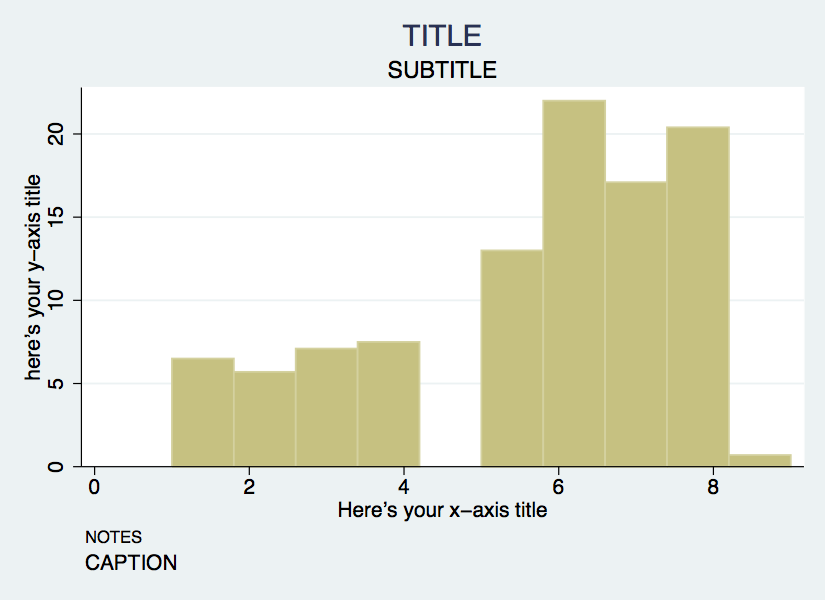
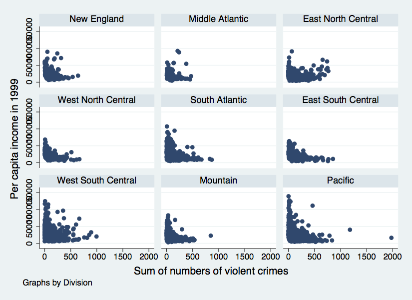
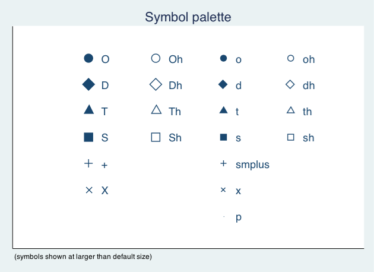
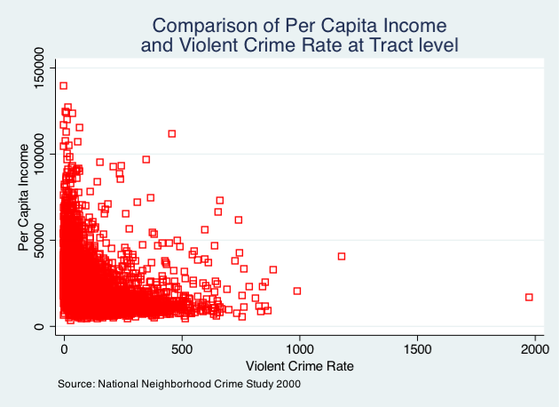
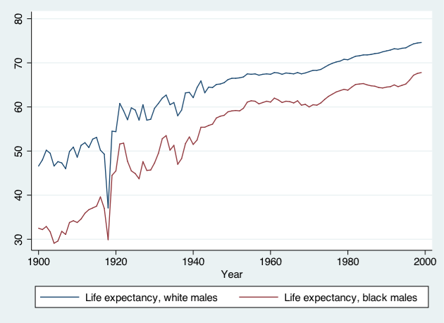
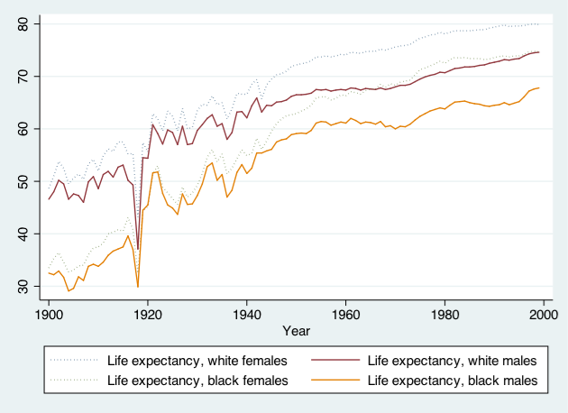

Stata Modeling & Graphing
Topics
- Stata modeling
- Simple regression
- Multiple regression
- Interactions
- Exporting regression tables
- Testing model assumptions
- Stata graphing
- Univariate graphs
- Bivariate graphs
Setup
Software & Materials
Laptop users: you will need a copy of Stata installed on your machine. Harvard FAS affiliates can install a licensed version from http://downloads.fas.harvard.edu/download
- Download class materials at https://github.com/IQSS/dss-workshops/raw/master/Stata/StataModGraph.zip
- Extract materials from the zipped directory
StataModGraph.zip(Right-click => Extract All on Windows, double-click on Mac) and move them to your desktop!
Organization
- Please feel free to ask questions at any point if they are relevant to the current topic (or if you are lost!)
- Collaboration is encouraged - please introduce yourself to your neighbors!
- If you are using a laptop, you will need to adjust file paths accordingly
- Make comments in your Do-file - save on flash drive or email to yourself
Goals
- This is an introduction to modeling and visualization in Stata
- Assumes basic knowledge of Stata
- Not appropriate for people already familiar with Stata
- If you are catching on before the rest of the class, experiment with command features described in help files
- Learning Objectives:
- Fit models in Stata
- Test modeling assumptions
- Plot basic graphs in Stata
- Plot two-way graphs
Fitting models
Today’s Dataset
- We have data on a variety of variables for all 50 states
- Population, density, energy use, voting tendencies, graduation rates, income, etc.
- We’re going to be predicting SAT scores
- Univariate Regression: SAT scores and Education Expenditures
- Does the amount of money spent on education affect the mean SAT score in a state?
- Dependent variable: csat
- Independent variable: expense
Opening Files
- Look at bottom left hand corner of Stata screen
- This is the directory Stata is currently reading from
- Files are located in the StataStatistics folder on the Desktop
- Start by telling Stata where to look for these
set more off
cd "~/Desktop/Stata/StataStatGraph"
/nfs/www/edu-harvard-iq-tutorials/Stata/StataStatGraph- Use dir to see what is in the directory:
dir
total 8
drwxr-sr-x. 2 izahn tutorwww 4096 Oct 22 21:59 dataSets/
drwxr-sr-x. 3 izahn tutorwww 4096 Oct 22 21:59 images/
cd dataSets
/nfs/www/edu-harvard-iq-tutorials/Stata/StataStatGraph/dataSets
dir
total 21008
-rwxr-xr-x. 1 izahn tutorwww 21103444 Oct 22 21:59 NatNeighCrimeStudy.dta*
-rwxr-xr-x. 1 izahn tutorwww 8977 Oct 22 21:59 states.dta*
-rwxr-xr-x. 1 izahn tutorwww 298191 Oct 22 21:59 TimePollPubSchools.dta*
cd ..
/nfs/www/edu-harvard-iq-tutorials/Stata/StataStatGraph- Load the data
use dataSets/states.dta
(U.S. states data 1990-91)Simple regression
Steps for running regression
- Examine descriptive statistics
- Look at relationship graphically and test correlation(s)
- Run and interpret regression
- Test regression assumptions
Preliminaries
- We want to predict csat scores from expense
- First, let’s look at some descriptives
sum csat expense
Variable | Obs Mean Std. Dev. Min Max
-------------+---------------------------------------------------------
csat | 51 944.098 66.93497 832 1093
expense | 51 5235.961 1401.155 2960 9259- We want to predict csat scores from expense
- First, let’s look at some descriptives
codebook csat expense
-------------------------------------------------------------------------------
csat Mean composite SAT score
-------------------------------------------------------------------------------
type: numeric (int)
range: [832,1093] units: 1
unique values: 45 missing .: 0/51
mean: 944.098
std. dev: 66.935
percentiles: 10% 25% 50% 75% 90%
874 886 926 997 1024
-------------------------------------------------------------------------------
expense Per pupil expenditures prim&sec
-------------------------------------------------------------------------------
type: numeric (int)
range: [2960,9259] units: 1
unique values: 51 missing .: 0/51
mean: 5235.96
std. dev: 1401.16
percentiles: 10% 25% 50% 75% 90%
3782 4351 5000 5865 6738- Next, view relationship graphically
- Scatterplots work well for univariate relationships
- Next look at the correlation matrix
pwcorr csat expense, star(.05)
| csat expense
-------------+------------------
csat | 1.0000
expense | -0.4663* 1.0000- Not very interesting with only one predictor
SAT scores & Education Expenditures
regress csat expense
Source | SS df MS Number of obs = 51
-------------+---------------------------------- F(1, 49) = 13.61
Model | 48708.3001 1 48708.3001 Prob > F = 0.0006
Residual | 175306.21 49 3577.67775 R-squared = 0.2174
-------------+---------------------------------- Adj R-squared = 0.2015
Total | 224014.51 50 4480.2902 Root MSE = 59.814
------------------------------------------------------------------------------
csat | Coef. Std. Err. t P>|t| [95% Conf. Interval]
-------------+----------------------------------------------------------------
expense | -.0222756 .0060371 -3.69 0.001 -.0344077 -.0101436
_cons | 1060.732 32.7009 32.44 0.000 995.0175 1126.447
------------------------------------------------------------------------------OLS assumptions
- Assumption 1: Specification is appropriate (i.e., no relevant omitted variables)
- Assumption 2: Homoscedasticity (The variance around the regression model is the same for all values of the predictor variable)
- Assumption 3: Errors are independent
- Assumption 4: Relationships are linear
- Assumption 5: Normal Distribution of errors (only needed for inference)
Specification
The model specification should be informed by theory - i.e., our substantive knowledge of the subject matter. It’s important to include all relevant predictors in the model, otherwise our estimates will be biased.
- Goodness of fit
Multiple Regression
- Just keep adding predictors
- Let’s try adding some predictors to the model of SAT scores
- income :: % students taking SATs
- percent :: % adults with HS diploma (high)
Preliminaries
- As before, start with descriptive statistics and correlations
// descriptive statistics and correlations
sum income percent high
pwcorr csat expense income percent high
sum income percent high
Variable | Obs Mean Std. Dev. Min Max
-------------+---------------------------------------------------------
income | 51 33.95657 6.423134 23.465 48.618
percent | 51 35.76471 26.19281 4 81
high | 51 76.26078 5.588741 64.3 86.6
pwcorr csat expense income percent high
| csat expense income percent high
-------------+---------------------------------------------
csat | 1.0000
expense | -0.4663 1.0000
income | -0.4713 0.6784 1.0000
percent | -0.8758 0.6509 0.6733 1.0000
high | 0.0858 0.3133 0.5099 0.1413 1.0000- regress csat on exense, income, percent, and high
regress csat expense income percent high
Source | SS df MS Number of obs = 51
-------------+---------------------------------- F(4, 46) = 51.86
Model | 183354.603 4 45838.6508 Prob > F = 0.0000
Residual | 40659.9067 46 883.911016 R-squared = 0.8185
-------------+---------------------------------- Adj R-squared = 0.8027
Total | 224014.51 50 4480.2902 Root MSE = 29.731
------------------------------------------------------------------------------
csat | Coef. Std. Err. t P>|t| [95% Conf. Interval]
-------------+----------------------------------------------------------------
expense | .0045604 .004384 1.04 0.304 -.0042641 .013385
income | .4437858 1.138947 0.39 0.699 -1.848795 2.736367
percent | -2.533084 .2454477 -10.32 0.000 -3.027145 -2.039024
high | 2.086599 .9246023 2.26 0.029 .2254712 3.947727
_cons | 836.6197 58.33238 14.34 0.000 719.2027 954.0366
------------------------------------------------------------------------------Exercise 0
Multiple Regression
Open the datafile, states.dta.
- Select a few variables to use in a multiple regression of your own. Before running the regression, examine descriptive of the variables and generate a few scatterplots.
- Run your regression
- Examine the plausibility of the assumptions of normality and homogeneity
Interactions
- What if we wanted to test an interaction between percent & high?
- Option 1: generate product terms by hand
// generate product of percent and high
gen percenthigh = percent*high
regress csat expense income percent high percenthigh
gen percenthigh = percent*high
regress csat expense income percent high percenthigh
Source | SS df MS Number of obs = 51
-------------+---------------------------------- F(5, 45) = 46.11
Model | 187430.401 5 37486.0801 Prob > F = 0.0000
Residual | 36584.1091 45 812.980201 R-squared = 0.8367
-------------+---------------------------------- Adj R-squared = 0.8185
Total | 224014.51 50 4480.2902 Root MSE = 28.513
------------------------------------------------------------------------------
csat | Coef. Std. Err. t P>|t| [95% Conf. Interval]
-------------+----------------------------------------------------------------
expense | .0045575 .0042044 1.08 0.284 -.0039107 .0130256
income | .0887856 1.10374 0.08 0.936 -2.134261 2.311832
percent | -8.143002 2.516509 -3.24 0.002 -13.21151 -3.074493
high | .4240906 1.156545 0.37 0.716 -1.905311 2.753492
percenthigh | .0740926 .0330909 2.24 0.030 .0074441 .1407411
_cons | 972.525 82.5457 11.78 0.000 806.2695 1138.781
------------------------------------------------------------------------------- What if we wanted to test an interaction between percent & high?
- Option 2: Let Stata do your dirty work
// use the # sign to represent interactions
regress csat percent high c.percent#c.high
// same as . regress csat c.percent##high
regress csat percent high c.percent#c.high
Source | SS df MS Number of obs = 51
-------------+---------------------------------- F(3, 47) = 77.39
Model | 186302.091 3 62100.6971 Prob > F = 0.0000
Residual | 37712.4186 47 802.391885 R-squared = 0.8317
-------------+---------------------------------- Adj R-squared = 0.8209
Total | 224014.51 50 4480.2902 Root MSE = 28.327
------------------------------------------------------------------------------
csat | Coef. Std. Err. t P>|t| [95% Conf. Interval]
-------------+----------------------------------------------------------------
percent | -8.15717 2.488388 -3.28 0.002 -13.16316 -3.151179
high | .6674578 1.082615 0.62 0.541 -1.510482 2.845398
|
c.percent#|
c.high | .0764271 .0324919 2.35 0.023 .0110619 .1417924
|
_cons | 974.9354 81.98078 11.89 0.000 810.0113 1139.859
------------------------------------------------------------------------------Categorical Predictors
- For categorical variables, we first need to dummy code
- Use region as example
- Option 1: create dummy codes before fitting regression model
// create region dummy codes using tab
tab region, gen(region)
//regress csat on region
regress csat region1 region2 region3
tab region, gen(region)
Geographica |
l region | Freq. Percent Cum.
------------+-----------------------------------
West | 13 26.00 26.00
N. East | 9 18.00 44.00
South | 16 32.00 76.00
Midwest | 12 24.00 100.00
------------+-----------------------------------
Total | 50 100.00
regress csat region1 region2 region3
Source | SS df MS Number of obs = 50
-------------+---------------------------------- F(3, 46) = 9.61
Model | 82049.4719 3 27349.824 Prob > F = 0.0000
Residual | 130911.908 46 2845.91105 R-squared = 0.3853
-------------+---------------------------------- Adj R-squared = 0.3452
Total | 212961.38 49 4346.15061 Root MSE = 53.347
------------------------------------------------------------------------------
csat | Coef. Std. Err. t P>|t| [95% Conf. Interval]
-------------+----------------------------------------------------------------
region1 | -63.77564 21.35592 -2.99 0.005 -106.7629 -20.7884
region2 | -120.5278 23.52385 -5.12 0.000 -167.8788 -73.17672
region3 | -80.08333 20.37225 -3.93 0.000 -121.0906 -39.07611
_cons | 1010.083 15.39998 65.59 0.000 979.0848 1041.082
------------------------------------------------------------------------------- For categorical variables, we first need to dummy code
- Use region as example
- Option 2: Let Stata do it for you
// regress csat on region using fvvarlist syntax
// see help fvvarlist for details
regress csat i.region
regress csat i.region
Source | SS df MS Number of obs = 50
-------------+---------------------------------- F(3, 46) = 9.61
Model | 82049.4719 3 27349.824 Prob > F = 0.0000
Residual | 130911.908 46 2845.91105 R-squared = 0.3853
-------------+---------------------------------- Adj R-squared = 0.3452
Total | 212961.38 49 4346.15061 Root MSE = 53.347
------------------------------------------------------------------------------
csat | Coef. Std. Err. t P>|t| [95% Conf. Interval]
-------------+----------------------------------------------------------------
region |
N. East | -56.75214 23.13285 -2.45 0.018 -103.3161 -10.18813
South | -16.30769 19.91948 -0.82 0.417 -56.40353 23.78814
Midwest | 63.77564 21.35592 2.99 0.005 20.7884 106.7629
|
_cons | 946.3077 14.79582 63.96 0.000 916.5253 976.0901
------------------------------------------------------------------------------Exercise 1
Regression, Categorical Predictors, & Interactions
Open the datafile, states.dta.
- Add on to the regression equation that you created in exercise 1 by generating an interaction term and testing the interaction.
- Try adding a categorical variable to your regression (remember, it will need to be dummy coded). You could use region or generate a new categorical variable from one of the continuous variables in the dataset.
Exporting & saving results
Regression tables
- Usually when we’re running regression, we’ll be testing multiple models at a time
- Can be difficult to compare results
- Stata offers several user-friendly options for storing and viewing regression output from multiple models
- First, download the necessary packages:
Saving & replaying
- You can store regression model results in Stata
// fit two regression models and store the results
regress csat expense income percent high
estimates store Model1
regress csat expense income percent high i.region
estimates store Model2
regress csat expense income percent high
Source | SS df MS Number of obs = 51
-------------+---------------------------------- F(4, 46) = 51.86
Model | 183354.603 4 45838.6508 Prob > F = 0.0000
Residual | 40659.9067 46 883.911016 R-squared = 0.8185
-------------+---------------------------------- Adj R-squared = 0.8027
Total | 224014.51 50 4480.2902 Root MSE = 29.731
------------------------------------------------------------------------------
csat | Coef. Std. Err. t P>|t| [95% Conf. Interval]
-------------+----------------------------------------------------------------
expense | .0045604 .004384 1.04 0.304 -.0042641 .013385
income | .4437858 1.138947 0.39 0.699 -1.848795 2.736367
percent | -2.533084 .2454477 -10.32 0.000 -3.027145 -2.039024
high | 2.086599 .9246023 2.26 0.029 .2254712 3.947727
_cons | 836.6197 58.33238 14.34 0.000 719.2027 954.0366
------------------------------------------------------------------------------
estimates store Model1
regress csat expense income percent high i.region
Source | SS df MS Number of obs = 50
-------------+---------------------------------- F(7, 42) = 51.07
Model | 190570.293 7 27224.3275 Prob > F = 0.0000
Residual | 22391.0874 42 533.121128 R-squared = 0.8949
-------------+---------------------------------- Adj R-squared = 0.8773
Total | 212961.38 49 4346.15061 Root MSE = 23.089
------------------------------------------------------------------------------
csat | Coef. Std. Err. t P>|t| [95% Conf. Interval]
-------------+----------------------------------------------------------------
expense | -.004375 .0044603 -0.98 0.332 -.0133763 .0046263
income | 1.306164 .950279 1.37 0.177 -.6115765 3.223905
percent | -2.965514 .2496481 -11.88 0.000 -3.469325 -2.461704
high | 3.544804 1.075863 3.29 0.002 1.373625 5.715983
|
region |
N. East | 80.81334 15.4341 5.24 0.000 49.66607 111.9606
South | 33.61225 13.94521 2.41 0.020 5.469676 61.75483
Midwest | 32.15421 10.20145 3.15 0.003 11.56686 52.74157
|
_cons | 724.8289 79.25065 9.15 0.000 564.8946 884.7631
------------------------------------------------------------------------------
estimates store Model2- Stored models can be recalled
estimates replay Model1
-------------------------------------------------------------------------------
Model Model1
-------------------------------------------------------------------------------
Source | SS df MS Number of obs = 51
-------------+---------------------------------- F(4, 46) = 51.86
Model | 183354.603 4 45838.6508 Prob > F = 0.0000
Residual | 40659.9067 46 883.911016 R-squared = 0.8185
-------------+---------------------------------- Adj R-squared = 0.8027
Total | 224014.51 50 4480.2902 Root MSE = 29.731
------------------------------------------------------------------------------
csat | Coef. Std. Err. t P>|t| [95% Conf. Interval]
-------------+----------------------------------------------------------------
expense | .0045604 .004384 1.04 0.304 -.0042641 .013385
income | .4437858 1.138947 0.39 0.699 -1.848795 2.736367
percent | -2.533084 .2454477 -10.32 0.000 -3.027145 -2.039024
high | 2.086599 .9246023 2.26 0.029 .2254712 3.947727
_cons | 836.6197 58.33238 14.34 0.000 719.2027 954.0366
------------------------------------------------------------------------------- Stored models can be compared
estimates table Model1 Model2
----------------------------------------
Variable | Model1 Model2
-------------+--------------------------
expense | .00456044 -.00437502
income | .44378583 1.3061642
percent | -2.5330843 -2.9655142
high | 2.0865991 3.5448038
|
region |
N. East | 80.813342
South | 33.612251
Midwest | 32.154215
|
_cons | 836.61966 724.82886
----------------------------------------Exporting to Excel
- Avoid human error when transferring coefficients into tables
- Excel can be used to format publication-ready tables
outreg2 [Model1 Model2] using csatprediction.xls, replace
~/ado/plus/o/outreg2.ado
csatprediction.xls
dir : seeoutGraphing in Stata
Graphing Strategies
- Keep it simple
- Labels, labels, labels!!
- Avoid cluttered graphs
- Every part of the graph should be meaningful
- Avoid:
- Shading
- Distracting colors
- Decoration
- Always know what you’re working with before you get started
- Recognize scale of data
- If you’re using multiple variables – how do their scales align?
- Before any graphing procedure review variables with
codebook,sum,tab, etc. - HELPFUL STATA HINT: If you want your command to go on multiple lines use
///at end of each line
Terrible Graph

Much Better Graph

Univariate Graphics
Our First Dataset
- Time Magazine Public School Poll
- Based on survey of 1,000 adults in U.S.
- Conducted in August 2010
- Questions regarding feelings about parental involvement, teachers union, current potential for reform
- Open Stata and call up the datafile for today
Single Continuous Variables
Example: Histograms
- Stata assumes you’re working with continuous data
- Very simple syntax:
hist varname
- Put a comma after your varname and start adding options
bin(#): change the number of bars that the graph displaysnormal: overlay normal curveaddlabels: add actual values to bars
Histogram Options
- To change the numeric depiction of your data add these options after the comma
- Choose one: density fraction frequency percent
- Be sure to properly describe your histogram:
title(insert name of graph)subtitle(insert subtitle of graph)note(insert note to appear at bottom of graph)caption(insert caption to appear below notes)
Histogram Example

Axis Titles & Labels
- Axis title options (default is variable label):
xtitle(insert x axis name)ytitle(insert y axis name)
- Don’t want axis titles?
xtitle("")ytitle("")
- Add labels to X or Y axis:
- xlabel(insert x axis label)
- ylabel(insert y axis label)
- Tell Stata how to scale each axis
- xlabel(start#(increment)end#)
- xlabel(0(5)100)
- This would label x-axis from 0-100 in increments of 5
Axis Labels Example
hist F1, bin(10) percent title(TITLE) subtitle(SUBTITLE) ///
caption(CAPTION) note(NOTES) ///
xtitle(Here's your x-axis title) ///
ytitle(here's your y-axis title)
Single Categorical Variables
- We can also use the
histcommand for bar graphs- Simply specify “discrete” with options
- Stata will produce one bar for each level (i.e. category) of variable
- Use
xlabelcommand to insert names of individual categories
hist F4, title(Racial breakdown of Time Poll Sample) xtitle(Race) ///
ytitle(Percent) xlabel(1 "White" 2 "Black" 3 "Asian" 4 "Hispanic" ///
5 "Other") discrete percent addlabels
Exercise 2
Histograms Bar Graphs
- Open the datafile, NatNeighCrimeStudy.dta.
- Create a histogram of the tract-level poverty rate (variable name:
T_POVRTY). - Insert the normal curve over the histogram
- Change the numeric representation on the Y-axis to “percent”
- Add appropriate titles to the overall graph and the x axis and y axis. Also, add a note that states the source of this data.
- Open the datafile, TimePollPubSchools.dta
- Create a histogram of the question, “What grade would you give your child’s school” (variable name: Q11). Be sure to tell Stata that this is a categorical variable.
- Format this graph so that the axes have proper titles and labels. Also, add an appropriate title to the overall graph that goes onto two lines. Add a note stating the source of the data.
Bivariate Graphics
Next Dataset:
- National Neighborhood Crime Study (NNCS)
- N=9,593 census tracts in 2000
- Explore sources of variation in crime for communities in the United States
- Tract-level data: crime, social disorganization, disadvantage, socioeconomic inequality
- City-level data: labor market, socioeconomic inequality, population change
The Twoway Family
twowayis basic Stata command for all twoway graphs- Use
twowayanytime you want to make comparisons among variables - Can be used to combine graphs (i.e., overlay one graph with another
- e.g., insert line of best fit over a scatter plot
- Some basic examples:
use NatNeighCrimeStudy.dta
twoway scatter T_PERCAP T_VIOLNT
twoway dropline T_PERCAP T_VIOLNT
twoway lfitci T_PERCAP T_VIOLNTTwoway & the by Statement

Twoway Title Options
- Same title options as with histogram
title(insert name of graph)subtitle(insert subtitle of graph)note(insert note to appear at bottom of graph)caption(insert caption to appear below notes)
Twoway Title Options Example
twoway scatter T_PERCAP T_VIOLNT, ///
title(Comparison of Per Capita Income ///
and Violent Crime Rate at Tract level) ///
xtitle(Violent Crime Rate) ytitle(Per Capita Income) ///
note(Source: National Neighborhood Crime Study 2000) - The title is a bit cramped–let’s fix that:
twoway scatter T_PERCAP T_VIOLNT, ///
title("Comparison of Per Capita Income" ///
"and Violent Crime Rate at Tract level") ///
xtitle(Violent Crime Rate) ytitle(Per Capita Income) ///
note(Source: National Neighborhood Crime Study 2000) Twoway Symbol Options
- A variety of symbol shapes are available: use
palette symbolpaletteto seem them andmsymbol()to set them

Twoway Symbol Options
twoway scatter T_PERCAP T_VIOLNT, ///
title("Comparison of Per Capita Income" ///
"and Violent Crime Rate at Tract level") ///
xtitle(Violent Crime Rate) ytitle(Per Capita Income) ///
note(Source: National Neighborhood Crime Study 2000) ///
msymbol(Sh) mcolor("red")
Overlaying Twoway Graphs
- Very simple to combine multiple graphs…just put each graph command in parentheses
twoway (scatter var1 var2) (lfit var1 var2)
- Add individual options to each graph within the parentheses
- Add overall graph options as usual following the comma
twoway (scatter var1 var2) (lfit var1 var2), options
Overlaying Points & Lines
twoway (scatter T_PERCAP T_VIOLNT) ///
(lfit T_PERCAP T_VIOLNT), ///
title("Comparison of Per Capita Income" ///
"and Violent Crime Rate at Tract level") ///
xtitle(Violent Crime Rate) ytitle(Per Capita Income) ///
note(Source: National Neighborhood Crime Study 2000)Overlaying Points & Labels
Exercise 3
The TwoWay Family
Open the datafile, NatNeighCrimeStudy.dta.
- Create a basic twoway scatterplot that compares the city unemployment rate (
C_UNEMP) to the percent secondary sector low-wage jobs (C_SSLOW) - Generate the same scatterplot, but this time, divide the plot by the dummy variable indicating whether the city is located in the south or not (
C_SOUTH) - Change the color of the symbol that you use in this scatter plot
- Change the type of symbol you use to a marker of your choice
- Notice in your scatterplot that is broken down by
C_SOUTHthat there is an outlier in the upper right hand corner of the “Not South” graph. Add the city name label to this marker. - Review the options available under “help twowayoptions” and change one aspect of your graph using an option that we haven’t already reviewed
Twoway Line Graphs
- Line graphs helpful for a variety of data
- Especially any type of time series data
- We’ll use data on US life expectancy from 1900-1999
webuse uslifeexp, clear
webuse uslifeexp, clear
twoway (line le_wm year, mcolor("red")) ///
(line le_bm year, mcolor("green"))

Stata Graphing Lines

Exporting Graphs
- From Stata, right click on image and select “save as” or try syntax:
graph export myfig.esp, replace
- In Microsoft Word: insert -> picture -> from file
- Or, right click on graph in Stata and copy and paste into MS Word
Wrap-up
Feedback
These workshops are a work in progress, please provide any feedback to: help@iq.harvard.edu
Resources
- IQSS
- Workshops: https://dss.iq.harvard.edu/workshop-materials
- Data Science Services: https://dss.iq.harvard.edu/
- Research Computing Environment: https://iqss.github.io/dss-rce/
- HBS
- Research Computing Services workshops: https://training.rcs.hbs.org/workshops
- Other HBS RCS resources: https://training.rcs.hbs.org/workshop-materials
- RCS consulting email: mailto:research@hbs.edu
- Stata
- UCLA website: http://www.ats.ucla.edu/stat/Stata/
- Stata website: http://www.stata.com/help.cgi?contents
- Email list: http://www.stata.com/statalist/